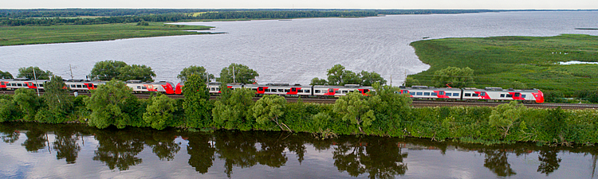

|
|
О компании
|

|
ОАО «Российские железные дороги» (ОАО «РЖД») — российская государственная вертикально интегрированная компания,
владелец инфраструктуры общего пользования, значительной части подвижного состава и важнейший оператор
российской сети железных дорог.
Полное наименование — Открытое акционерное общество «Российские железные дороги».
Официальное наименование на английском языке — Joint Stock Company «Russian Railways» (JSCo «RZD»)
ОАО «РЖД» осуществляет транспортное обслуживание в 77 из 85 субъектов Российской Федерации. .
Филиал организации в городе Орск входит в состав Южно-Уральской дирекции тяги.
Южно-Уральская железная дорога (ЮУЖД) — один из 16 филиалов-дорог ОАО «Российские железные дороги»,
включающий часть железнодорожной сети страны располагающийся на территориях Курганской, Оренбургской,
Челябинской областей, заходящая на территории Омской, Самарской, Саратовской, Свердловской областей, республики
Башкортостана, а также за пределами Российской Федерации в Казахстане на территорию Северо-Казахстанской области.
Управление дороги находится в Челябинске.
|
|
|
©2019 ОАО "РЖД" г. Орск
|